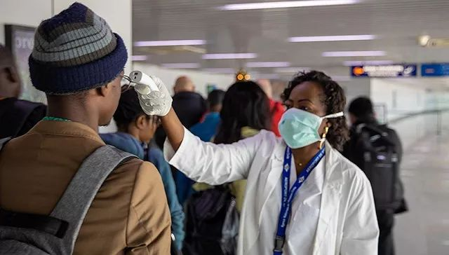
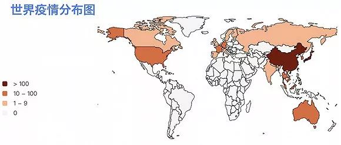
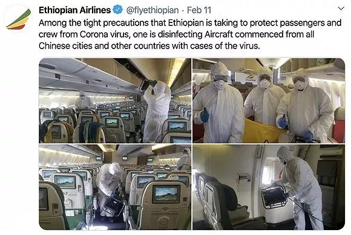
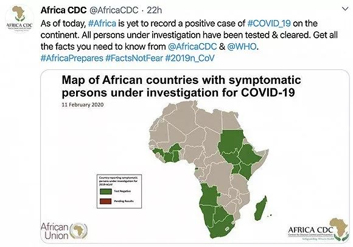

世卫组织称新冠肺炎还不是全球流行病，其他国家如何应对？
原文链接 备份链接 限制入境措施带来的危害可能大于好处，因为这可能阻挡信息、医疗物资的流通，影响世界经济；尽管非洲仍未发现确诊案例，但医学专家们预计，疫情在非洲爆发的风险也不小 文 |《财经》记者 蔡婷贻 编辑 | 郝洲 日内瓦当地时间2 …
刚果（布）马亚-马亚国际机场，旅客正在接受体温检测。图片来源：WHO/Elombat D.
记者 | 潘金花
“
除了肯尼亚、南非等，多数非洲国家的重症监护医疗设施都很有限，一家医院可能只有10个床位可以满足重症监护条件。
”
在全球严阵以待、合力抗击新型冠状病毒肺炎疫情时，有一片大陆尤其绷紧了神经。
迄今为止，非洲54个国家还未发现新冠肺炎确诊病例，但世卫组织在非洲的紧急行动负责人米歇尔·姚（Michel Yao）已发出警告，病例确诊只是时间问题，疫情“随时”会出现。

之所以这样说，是因为非洲目前的病毒检测能力仍相对有限，而非洲与疫情国家之间，又存在着大量的人员交流。
据《卫报》12日报道，截至上周，非洲只有包括塞内加尔的巴斯德研究所（Institut Pasteur）、南非的国家传染病研究所（National Institute for Communicable Diseases）在内的6个实验室有能力检测新冠病毒。
此前，非洲共向世卫组织报告了45例疑似病例，主要来自埃塞尔比亚、肯尼亚、科特迪瓦、加纳、博茨瓦纳等国。其中，已有35例经检测呈阴性，还有10例正在隔离、等待检测。这让外界开始担忧，非洲是否已经出现了未被发现的病例。
伦敦卫生与热带医学院院长彼得·皮奥（Peter Piot）上周就曾提出，非洲“不可避免”地会出现病例，但出乎意料的是，在亚洲、欧洲、美洲都相继暴发疫情后，非洲仍一例都没有。
葛兰素史克疫苗（GSK Vaccines）的流行病学家及首席医学官托马斯·布鲁尔（Thomas Breuer）也认为，至今未看到非洲报告确诊病例，“这肯定不是事实”。
据《金融时报》5日报道，世卫组织区域办事处早前已指出，有13个非洲国家面临的风险尤其大，主要因为它们与疫情严重国家的人员往来频繁，如阿尔及利亚、安哥拉、埃塞俄比亚、加纳、尼日利亚、坦桑尼亚和赞比亚等。
以埃塞俄比亚为例，该国拥有非洲最大的航空公司埃塞俄比亚航空（下称“埃航”）。据非洲新闻台11日报道，埃航每周有35趟航班飞往中国的5个目的地（北京、上海、香港、广州、成都），每天平均搭载4000名中国旅客往来两国，其中70%的旅客在抵达该国首都机场后，还会前往其他非洲国家。
此前，出于对疫情蔓延的担忧，肯尼亚航空（Kenya Airways）、南非航空（South African Airways）等6家非洲航空公司都已暂停了往来中国的航班。不过，埃航一直都坚持表示，停航无法中断疫情的传播，埃航将“患难与共”。
埃航首席执行官特沃德（Tewolde Gebremariam）说，世卫组织原本就告诉大家，停航无济于事，毕竟其他国家都已经出现了病例，最重要的应该是在机场加强防范措施，而不是去孤立和隔离。

埃航加强相关航班的消毒工作
不过，非洲国家卫生系统的薄弱还是不免让外界产生担忧。尽管非洲在经历了埃博拉疫情后，已经拥有了一定的防疫设施和经验，也已加强了整个非洲入境口岸的筛查工作，但这并不代表非洲已经“准备好”应对新冠肺炎疫情。
若仅讨论死亡率，埃博拉的严重性显然要比新冠肺炎可怕得多，其平均病死率约为50%，在以往疫情中出现的病死率从25%到90%不等。但埃博拉病毒主要通过接触传染，患者一般症状明显，而新冠病毒还可以通过飞沫传播，即使是无症状者也具备传染性。
世卫组织在非洲的紧急行动负责人米歇尔·姚表示，如今非洲面临的挑战主要是检测试剂的缺乏，以及医院的收治能力有限。
他说，试剂的缺乏正在拖延非洲国家的确诊速度。此前，出现疑似病例的非洲国家大多是将检测样本送至塞内加尔、南非等国，甚至还有国家将样本送到了巴黎。
与此同时，非洲的多数医院都没有能力接收大量重症患者。“除了肯尼亚、南非等大国，多数国家的重症监护医疗设施都很有限，”米歇尔·姚说，“一家医院可能只有10个床位可以满足重症监护条件。要是出现了大量重症患者，那将会是一个很大的挑战。”
世卫组织突发卫生事件规划执行主任迈克尔·瑞恩（Michael Ryan）在周一的新闻发布会上已指出，“考虑到90%至100%的病人需要辅助供氧，20%至25%的病人需要重症监护，5%至10%的病人需要使用机械手段辅助或代替自主呼吸，那将会给卫生系统带来极大压力。”
因此，米歇尔·姚表示，非洲国家接下来的防疫工作重点，仍然是尽早发现病例，遏制疫情传播。

非洲疾控中心称，截至11日，所有疑似病例都已完成检测，结果均为阴性
非洲疾控中心（Africa CDC）表示，目前各地的医疗中心都正处于“高度戒备”状态。据悉，本周，有能力检测新冠病毒的非洲国家已增至15个，包括上述几个面临较大风险的国家。接下来，还会有更多检测实验室将在其他非洲国家建立运转。
世卫组织则正在向非洲29家实验室运送诊断用具。上个周末，非洲疾控中心也在塞内加尔为15个国家的科学家举办了一个研习班，向他们分发了包括检测试剂在内的诊断工具。非洲疾控中心主任约翰·肯格松（John Nkengasong）表示，下周，南非还将为其他25个国家举办培训。
肯格松说，确实存在检测设施不足导致还未发现病例的说法，而检测能力的提升，将会鼓励更多出现疑似症状的人向医疗机构报告病情。
“如果能将周转时间的单位从‘天’缩短至‘小时’，那出现疑似症状的人就会更有可能报告病情，接受检测，”肯格松说，“但如果要将一个人隔离数天，人们就会倾向于不报告。如今，非洲已有很多国家有能力检测病毒，或许在接下来的几个星期，就会出现确诊病例。时间会给出答案。”
而针对医院收治能力有限的问题，米歇尔·姚则表示，无国界医生（Médecins Sans Frontières）、撒马利亚救援会（Samaritan’s Purse）等非政府组织（NGO）正在提供搭建治疗中心所需的技术帮助，本周也还将举办一场地区合作伙伴之间的电话会议。
“如果有大量病例出现，我们希望NGO可以帮助增加收治能力，提供氧气瓶、呼吸机等设备。他们有能力在短时间内部署治疗中心，”米歇尔·姚说。
未经授权 禁止转载

原文链接 备份链接 限制入境措施带来的危害可能大于好处，因为这可能阻挡信息、医疗物资的流通，影响世界经济；尽管非洲仍未发现确诊案例，但医学专家们预计，疫情在非洲爆发的风险也不小 文 |《财经》记者 蔡婷贻 编辑 | 郝洲 日内瓦当地时间2 …
原文链接 备份链接 *************▲*************2月2日，武汉大学中南医院影像科主任徐海波教授（白衣者）和同事查看患者的CT检查影像。 （新华社/图） 全文共1150字，阅读大约需要3分钟。 武汉确诊患者单日 …
原文链接 备份链接 澎湃新闻记者 宋江云 2月12日晚，九江学院附属医院官方微信公号消息，2月11日，九江学院附属医院新确诊一例特殊的新型冠状病毒肺炎病例。该病例无发热症状，隐匿性强，在确诊前曾三次核酸检测均呈阴性，第四次核酸阳性方最终确 …
原文链接 备份链接 【财新网】（记者 黄姝伦 方祖望）在广东，只要踏进发热门诊的大门，就要接受核酸检测，排查是否感染了新冠肺炎。2月12日，广东省疫情发布会上，省卫健委副主任陈祝生称，全省发热门诊启动患者核酸检测排查，范围扩大至全员。 …
原文链接 备份链接 市场反馈认为，公共卫生事件对经济的影响有限；在应对疫情的关键时刻，政治和金融市场应对疫情展示出截然不同的态度 文 |《财经》特派记者 金焱 发自华盛顿 编辑 | 苏琦 2月11日，世界卫生组织通过社交媒体推特发布其确定 …